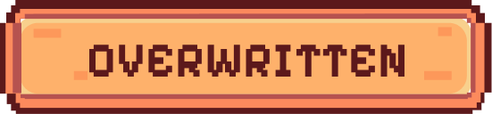
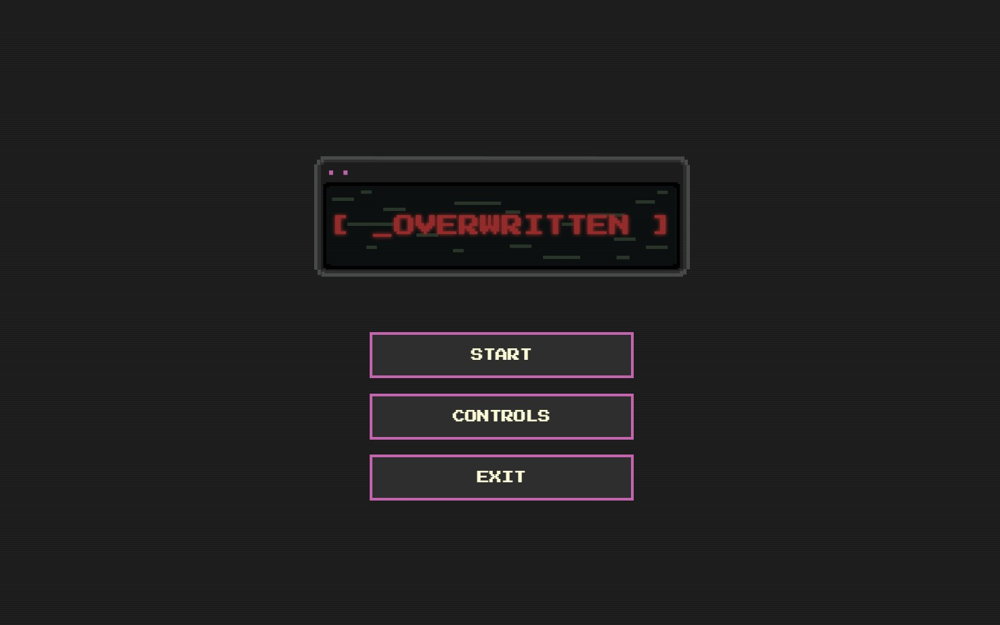
Overwritten is an interactive narrative experience and visual essay exploring the impact of artificial intelligence on creative labour within independent game development. The project was developed as part of my final-year research and investigates themes of authorship, identity, automation and control through a retro-inspired horror experience.
Rather than presenting research through a traditional essay format, I translated my findings into an interactive game where players uncover information through dialogue, exploration and environmental storytelling. The experience gradually reveals a hidden reality in which creative work has been replaced, manipulated and ultimately overwritten by automated systems.
The challenge was to communicate a complex academic debate surrounding AI, creativity and authorship through an engaging interactive experience. I wanted players to actively experience the themes rather than simply read about them.
My research question focused on how AI tools are reshaping perceptions of creative labour within independent game development. This required me to balance academic research with game design principles, ensuring that the experience remained meaningful while still feeling immersive and enjoyable.
Another challenge was creating an atmosphere that reflected themes of surveillance, system control and identity loss. I explored how visual design, sound design and interaction systems could work together to create a feeling of unease while reinforcing the project's message.
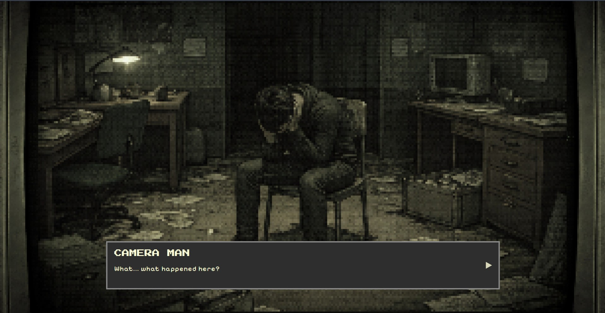
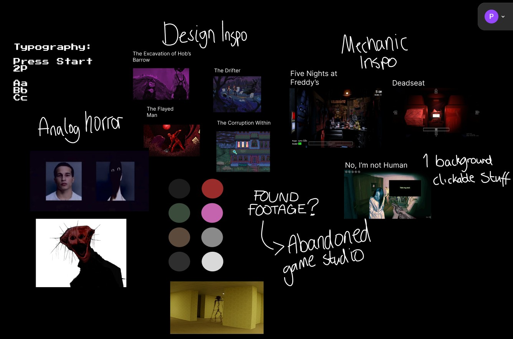
My visual inspiration came primarily from analogue horror projects such as The Mandela Catalogue alongside narrative-driven indie horror games. I was particularly interested in how distorted imagery, corrupted interfaces and environmental storytelling could create tension without relying on traditional horror mechanics.
I also analysed pixel-art games including The Excavation of Hob's Barrow, The Drifter, The Flayed Man and The Corruption Within. These projects influenced the muted colour palette, CRT-inspired interface design and atmospheric world-building used throughout Overwritten. My final style guide can be found below.
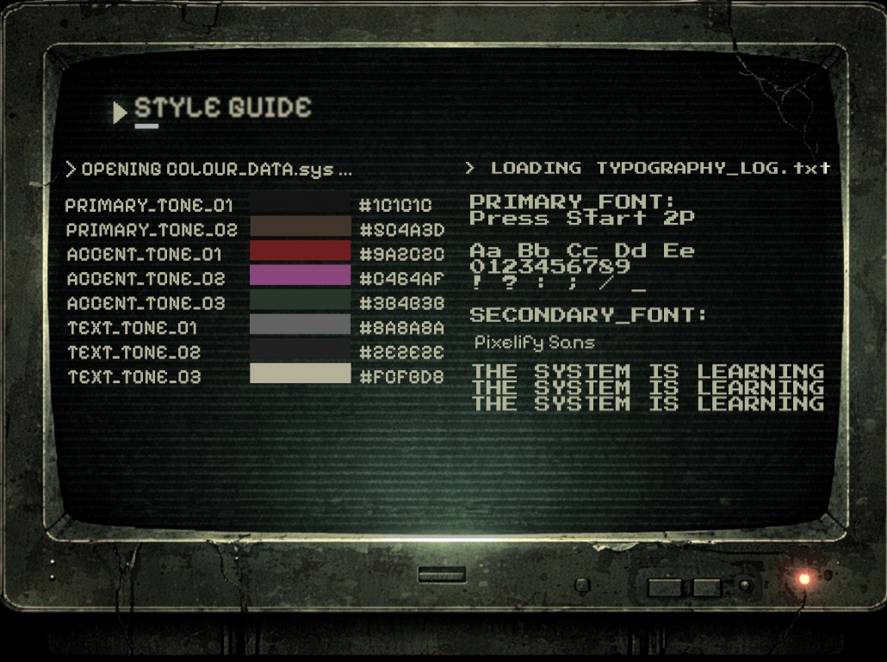
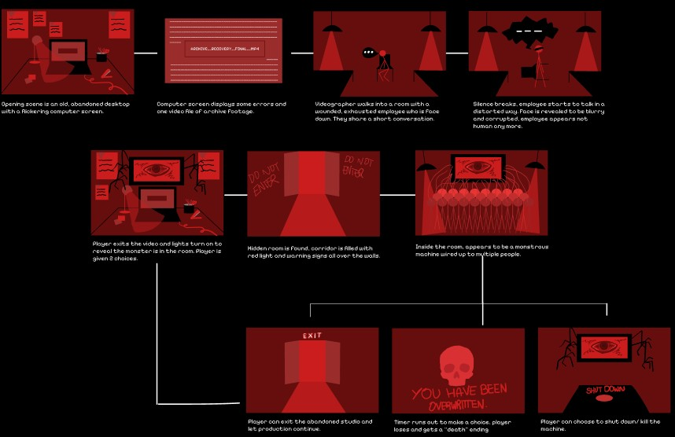
Before production began, I developed a storyboard mapping out the player's journey through the experience. This allowed me to visualise key narrative beats, interaction points and transitions between scenes.
Planning the project in this way helped establish pacing and ensured that information was revealed gradually. Since Overwritten functions as both a game and a visual essay, careful narrative structure was essential to maintaining player engagement while communicating the research themes.
Once the visual direction and narrative structure had been established, I began planning how the experience would function technically. Since the project would be developed entirely using HTML, CSS and JavaScript, I needed to determine how scenes, dialogue systems and player interactions would be structured.
I researched techniques used in browser-based narrative games and explored methods for implementing dialogue progression, scene transitions and branching outcomes. Particular attention was given to creating interactions that felt natural while reinforcing the themes of restricted access and system control.
During this stage I also planned the file-based interface used within the accompanying development blog, allowing both the game and supporting research to share a consistent visual language.
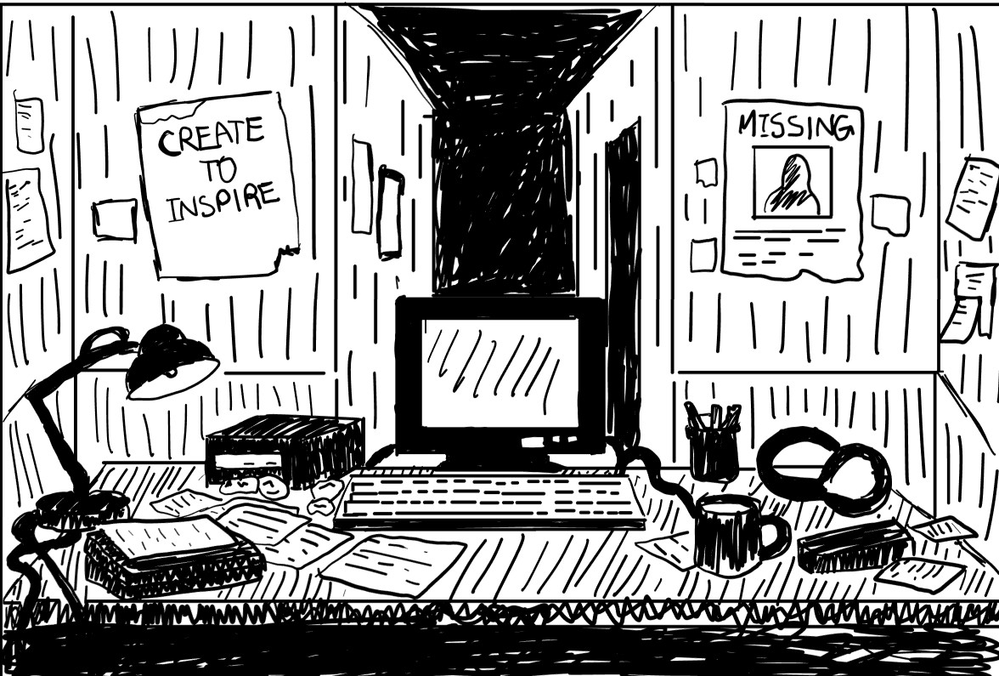
The experience was developed entirely in HTML, CSS and JavaScript. Environments were initially sketched before being recreated as pixel-art scenes using Pixilart. These scenes were then integrated into a browser-based game framework built from scratch.
JavaScript was used extensively to create dialogue systems, clickable hotspots, branching narrative paths, timed choices and ending triggers. Particular focus was placed on building interactions that gradually reduced player control, reinforcing the project's themes of manipulation and authorship loss.
CSS was used to create CRT effects, scanlines, screen flickers, camera movement and visual corruption effects that contributed to the analogue horror atmosphere.
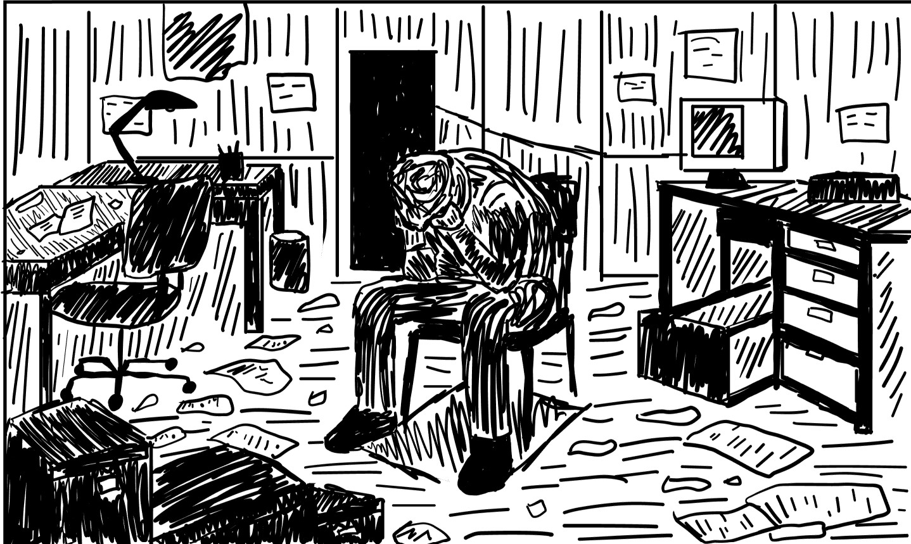
Audio played a crucial role in establishing atmosphere. Inspired by retro RPGs such as Undertale, I used synthetic dialogue sounds to create a sense of communication without requiring full voice acting.
Additional sound effects included footsteps, loading sounds, glitches, signal-loss effects and environmental ambience. These elements were layered throughout the experience to reinforce the feeling of interacting with a decaying digital system.
The final sequence makes particular use of sound design, combining visual corruption with distorted audio cues to create a climactic breakdown of the system.
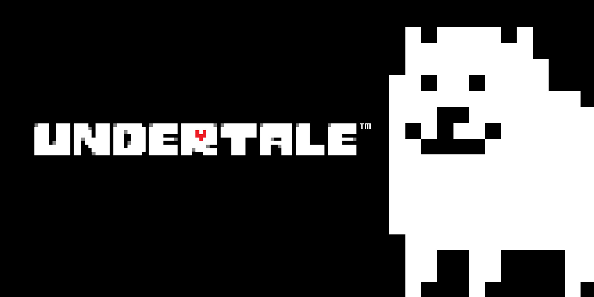
Alongside the final game, I created an interactive development blog that documented the project's research, planning and production process. Rather than using a traditional webpage layout, the blog was designed as a fictional computer workstation that matched the visual identity of the game.
Users can browse research files covering visual studies, geo-epistemology, AI ethics, production planning, audio development, prototyping and peer feedback. This allowed the supporting research to become part of the overall experience rather than existing as a separate document.
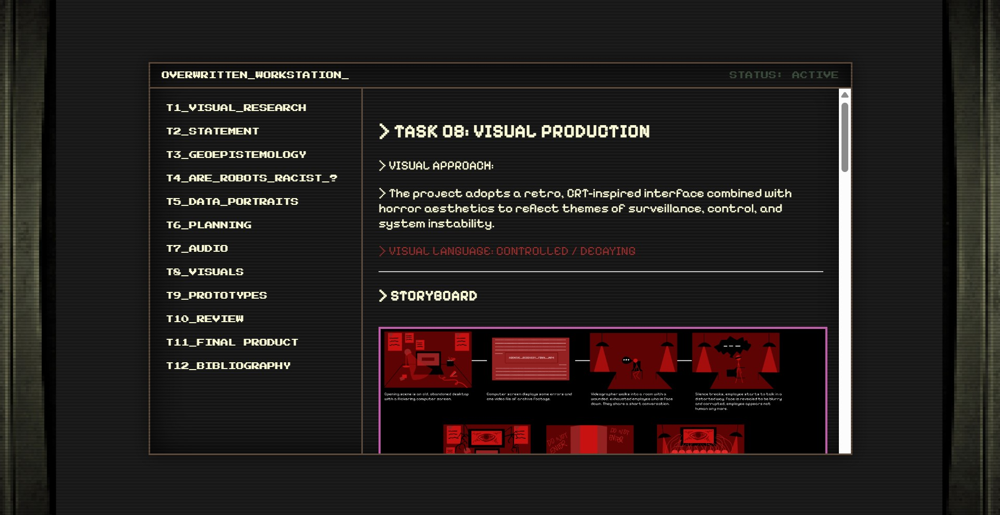
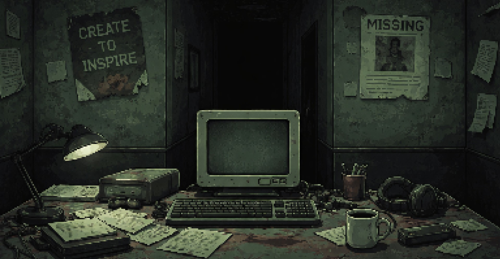
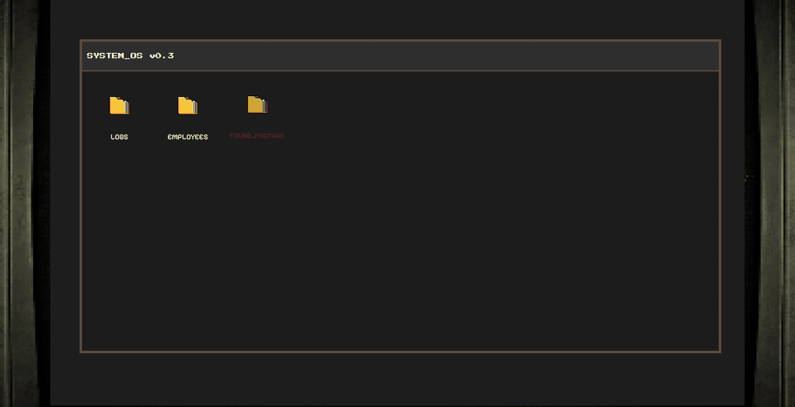
The final experience combines pixel-art environments, CRT-inspired user interfaces, analogue horror influences and interactive storytelling to communicate themes surrounding AI and creative labour.
Through dialogue, environmental storytelling and multiple endings, Overwritten encourages players to question ideas of authorship, control and the increasing role of automated systems in creative industries.
By transforming academic research into an interactive narrative, the project demonstrates how game design can function as a form of visual essay, allowing audiences to engage with complex ideas through experience rather than observation alone.
Overwritten became one of my most ambitious projects because it combined research, narrative design, programming, visual design and sound design into a single experience. The project challenged me to think beyond traditional academic formats and explore how interactive media can be used to communicate critical ideas.
The final outcome successfully transformed a research question into an immersive experience, demonstrating both my technical development skills and my ability to use design as a tool for communication and storytelling.